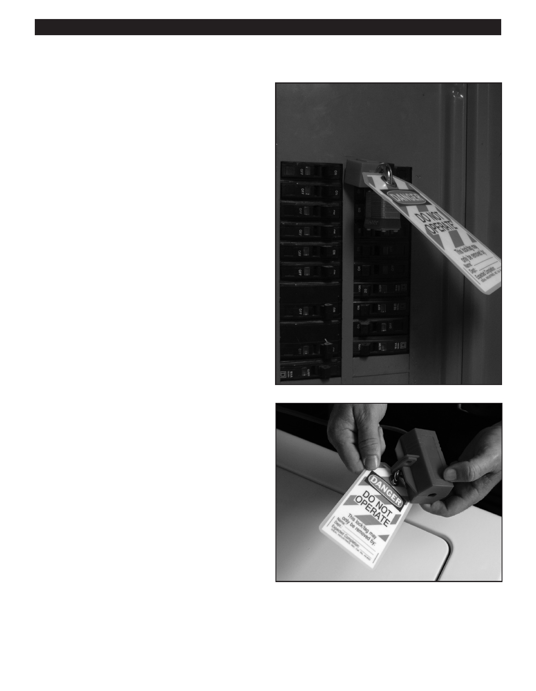

PA RT I C I PA N T R E S O U R C E G U I D E
Appliance Safety (continued)
Safety Rule #3:
Follow Lockout/Tagout Procedures
Lockout/tagout is a safety procedure to make sure that
power and energy sources, such as water or electricity, are
shut off properly and secured.
You’ll use lockout/tagout procedures when doing appliance
maintenance and repairs, particularly when you’re shutting
off a key water supply line, like for a clothes washer, or
working on an electrical appliance like a refrigerator.
Lockout Devices and Tags
Typical lockout devices that you’ll use include:
Padlocks
Gate and ball valve lockouts
Circuit breaker lockouts
Chains
Cable
Lockout tags usually are brightly colored so you can
immediately see and identify them.
Your company may have lockout/tagout kits they want you
to use. Check with your supervisor.
Where to Place Lockout Devices and Tags
Lockout devices and tags are typically applied to shut-off
valves, electrical cords, or main service panels.
How to Lock and Tag Out
Your employer is required to train you on the complete
lockout and tagout process. But here’s a high-level look at
how it’s done:
1. Shut off the source of the water or electrical power.
2. Attach a lockout device to this source, then lock and
tag it.
3. Release or drain any energy left in the plumbing or
electrical lines or equipment.
4. Test to be sure the energy is turned off and removed
from the pipes, circuits, or equipment.
Once these lockout//tagout steps are complete, you can
go ahead with the appliance repair.
6